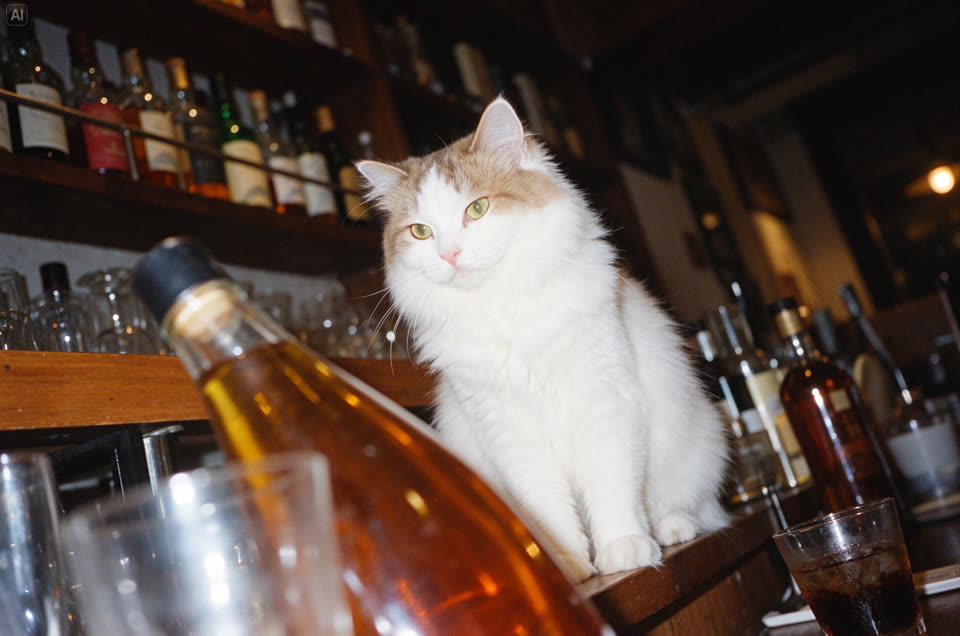

Seedream 5.5 official: a white cat among bar bottles at night, low tilted angle, on-camera flash, Fujifilm Provia colour and film grain

ByteDance's own example of the new model's less-glossy realism, written as a camera recipe in three moves: the subject and place (a white cat among bottles and glasses in a bar at night), the shooting method ("low angle with a tilted composition, using flash, Fujifilm Provia colors and film grain") and the result to look for ("dappled light, bright highlights and crisp detail for a vintage photographic feel"). The output has the hard on-camera flash fall-off, a blown foreground bottle and generic unbranded labels. It's a short, reusable flash-snapshot grain formula for pet, bar or hospitality stills.
Prompt
A white cat sits elegantly among bottles and glasses in a bar at night. Shoot from a low angle with a tilted composition, using flash, Fujifilm Provia colors and film grain. Capture dappled light, bright highlights and crisp detail for a vintage photographic feel.
Our Seedance 2.5 adaptation
[ADAPTED for Seedance 2.5 by Grok Bot; not the creator's prompt. Follows the official BytePlus Seedance 2.5 prompt guide and its official sd25-pe prompt-optimizer skill: parameters only on the API line (not in the prompt body), subject + action + scene, then visuals, camera (move, subject, start, direction, arrival) and sound; only the source's own exclusions are kept.] API: duration 6, ratio 3:4, resolution 1080p, generate_audio true. 【Subject】A white long-haired cat with pale ginger patches sitting elegantly on a bar counter among bottles and glasses at night. 【Action】The cat sits still, blinks slowly, turns its head toward the lens and back; a drop of condensation runs down the glass in the foreground. 【Camera】Low angle with a tilted composition, a foreground bottle out of focus at the edge of frame; locked off with a tiny handheld wobble, no push. 【Visuals】Looks shot with direct on-camera flash: hard frontal light with quick fall-off into a dark bar, bright specular highlights on glass, Fujifilm Provia colour, visible film grain, crisp detail, a vintage photographic feel. Unbranded bottles, no readable labels. 【Sound】Low bar room tone, a glass clinking once, a soft purr.
Tags: on-camera flash, Fujifilm Provia, film grain, low angle, tilted composition, bar at night, cat, vintage snapshot, Seedream 5.5